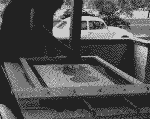

About Me
I am an artist based in Canberra, Australia. I dropped out of art school in the 90's and after working an office job since then I have been re-inspired by the world of street art to start creating again. I have moved away from my roots in photography and prefer instead to challenge myself to improve my drawing and investigate unfamiliar mediums such as painting, stencil and screenprints. My work is in collections around the world.
Exhibitions
- Aug 2009 - Free as a bird - FamousWhenDead Gallery, Melbourne
Group Exhibitions
- Aug 2009 - The Wee Show - Box Studios, Vancouver, Canada
- May 2009 - Spin that thing - FamousWhenDead Gallery, Melbourne
- May 2009 - Stick me hard II - Brusells, Belgium
- Feb 2009 - Your Kid Can't Do This - International stencil exhibition, Canberra, Sydney and Melbourne
- Jan 2009 - art:house art and design festival - Queanbeyan
- Aug 2008 - Melbourne Stencil Festival - Melbourne
About my prints
If you are interested in buying one of my prints, thanks. They are all printed on archival, 100% cotton 300gsm water colour paper. The only exceptions are some of the stencils and one-offs which sometimes just get printed on whatever is lying around. For my screen prints I use a archival artists' acrylics. All of my prints are printed by hand, by me.
Postage
Postage in tubes is free for all prints. Prints can be posted flat if required, please contact me for postage costs. For other artwork that cannot be rolled postage will be charged at whatever it costs me to send it. Please contact me beforehand to get a quote on postage for bulky items.
If you have any further questions please contact me via my contact page